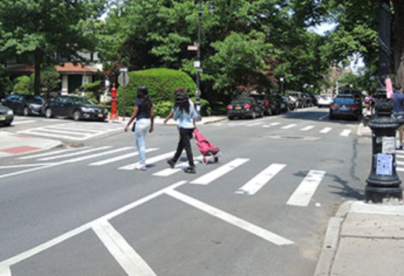
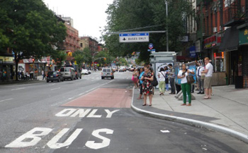
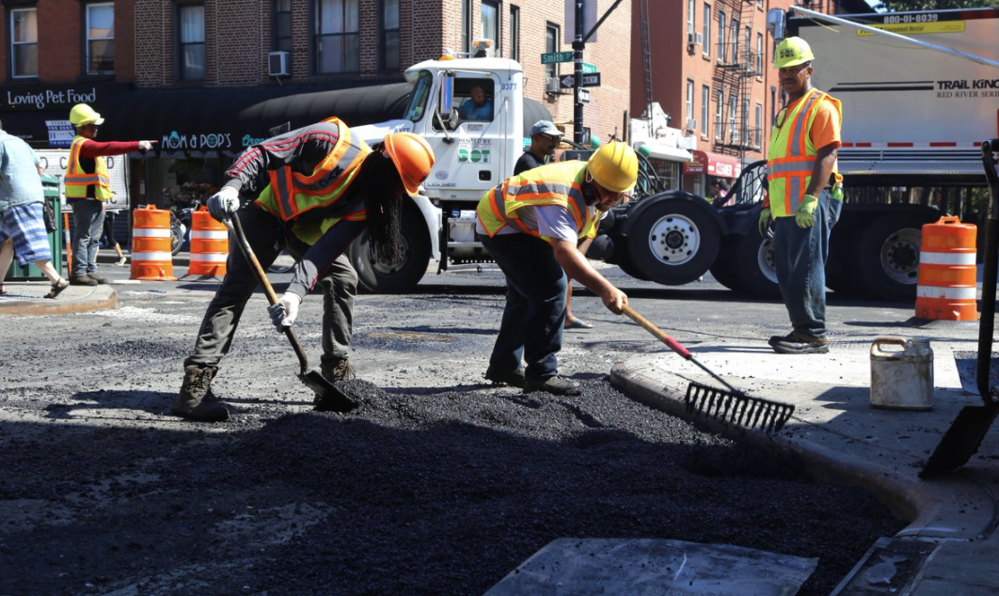

×
Background
The NYC Mayor's Office of Management & Budget (OMB) develops and releases
the administration's adopted Five Year Capital Budget every year. The plan
includes funding for capital projects across all City agencies for the next five
fiscal years. Projects that improve the safety of City streets are undertaken by
the Department of Transportation (DOT), but are sometimes also managed by the
Department of Design & Construction (DDC) when work involves rebuilding water mains
or sewers in addition to street construction.
Finding the Right Projects
The City funds thousands of projects in each five year budget, so finding the
ones that make our streets safer is a challenge. Luckily, Chris Whong at qri
has been able to scrape the detailed PDFs that include important scope and location
data and create usable tables. Unfortunately, location
data is often difficult to source for these projects because they are often tagged as "Citywide" or as affecting an
entire borough when that is actually not true. To mitigate this, I used the Capital Budget knowledge I gained as
Supervising Analyst in OMB's DOT Unit and Google to review individual scope information for projects that
may impact street safety. After selecting DOT and DDC projects that appear to meet a broad definition of street improvement,
I assigned the Community District (or Districts) that seemed most accurate if they were not already listed in the data.
Included Project Types
Bicycle & Pedestrian Improvements
These projects usually involve improving or building bike lanes, pedestrian plazas, and other related infrastructure.
After completion, these projects make cycling and walking safer by providing protection and separation from traffic and
employ other techniques such as day-lighting at intersections to improve visibility, allowing
drivers to see pedestrians
and cyclists before making a turn. Bicycle and pedestrian improvements are often linked within the same project scope, so
it would be difficult to separate them.
Bus Network Improvements
These projects include bus lanes, queue jumps, and bus bulbs that speed up buses on streets.
These improvements have secondary effects similar to many pedestrian and bicycle improvements. In addition to speeding
commutes and encouraging more bus ridership, they often improve visibility and calm automobile and truck traffic.
In NYC, bus improvements often occur along corridors traversed by Select Bus Service which incorporates many elements
of Bus Rapid Transit.
Comprehensive Street Reconstruction
Street reconstruction projects are among DOT's biggest and most complex undertakings. Street reconstruction means that
the entire street is being rebuilt from the dirt up, often including utilities, water mains, and sewer lines.
This means that these projects are actually often managed by DDC with funding from DOT and other agencies.
When streets are rebuilt, they often come with major enhancements that include many of the elements of bicycle, pedestrian, and bus
network projects.



What's not included?
While there is no specific breakout, All Projects funding also includes areas such as traffic signals and street lighting
which have smaller amounts of capital funding and are often included as elements of larger projects. However, there
is funding that is not possible to break out by location and is held as a lump-sum at the City or Borough level.
This analysis also does not include expense funding which covers many smaller projects and initiatives that do not
meet the City's strict capital eligibility guidelines.